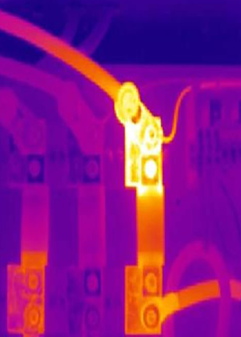

Mantenimiento Preventivo
Al mantenimiento preventivo, también se le llama mantenimiento planificado.
El mantenimiento preventivo trata de un conjunto de tareas de mantenimiento que tienen como objetivo mantener la instalaciones anticipándose a las averías.
Su objetivo es seguir consiguiendo las mismas prestaciones de los equipos y máquinas y compensar el desgaste que van sufriendo con el paso del tiempo, pero siempre antes de que surja una avería y de manera preventiva para evitarlos en el futuro.
Tienen un carácter sistemático, es decir que se realizan o bien por horas de funcionamiento de la instalación o por periodos de tiempos. Se tiene un registro del tiempo que tardan los componentes más importante en averiarse.
Normalmente se aprovechan tiempos con menor carga de trabajo para llevarlo a cabo.
Tipos de mantenimiento preventivo
Dentro del mantenimiento preventivo podemos encontrar el mantenimiento conductivo y el mantenimiento rutinario.
El mantenimiento conductivo es llevado a cabo por el personal de producción que atiende a la instalación, suelen ser tareas sencillas como son la lectura de parámetros, inspecciones sensoriales, pequeñas tareas de ajustes o configuración, etc.
El mantenimiento rutinario es el conjunto de técnicas que sin llegar al desmontaje de los equipos los conserva en el mejor estado posible por medio de engrases, limpiezas, sustituciones periódicas, etc.
Ejemplos de mantenimiento preventivo
El mantenimiento preventivo industrial se basa en las inspecciones. Además de las técnicas que hemos dado de mantenimiento rutinario y conductivo, las inspecciones permiten completar la filosofía de este mantenimiento que es evitar fallas. Son el mejor ejemplo de cómo se realiza este mantenimiento.
Aplicaciones del mantenimiento preventivo
Este tipo de mantenimiento es claramente superior al correctivo, para empresas de mayor nivel.
Es muy beneficioso evitar las averías, ya que permite reducir los costos. Aun así la mayor desventaja que tiene este sistema es el tiempo que consumen las inspecciones, durante las cuales el proceso de producción debe detenerse. Si la instalación tiene tiempos de descanso podrá realizarse durante estos, pero en muchos casos las instalaciones están funcionando todo el día y eso no es posible.
Las inspecciones se deben planificar e incluirlas dentro de las paradas programadas de la producción a la hora de su planificación, para tenerlas en cuenta en la capacidad productiva.
En Jofra Ingenieros queremos ayudarte a mantener tus instalaciones en perfecto estado de funcionamiento, brindarte soluciones a cada maquina o zona de tu empresa. Si estás interesado, contacta o llámanos al E-mail jofraingenieroseirl@gmail.com o al tef. 970684693